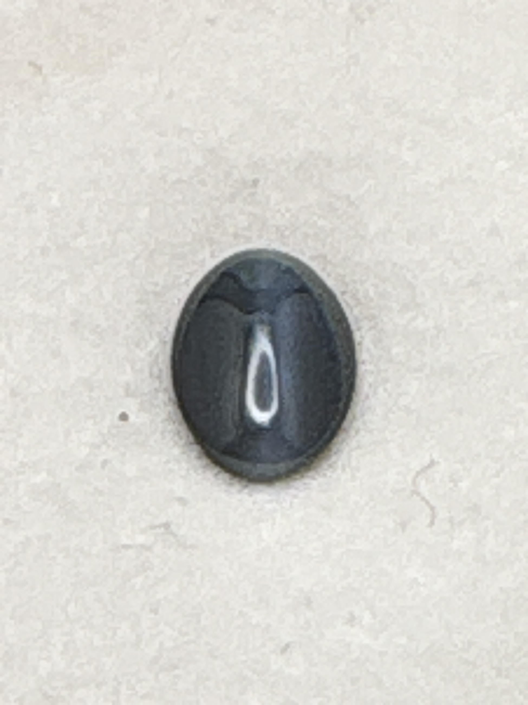

The Gem Drawer › No. 15

A dark oval cabochon with a clear chatoyant eye; the alexandrite claim is unverified.
| Catalogue no. | #15 |
|---|---|
| As labeled | Cat's Eye Alexandrite (AS LABELED - see important notes) |
| Shape / cut | Oval cabochon (label abbreviates "OV") |
| Weight | 1.1 ct |
| Measurements | Not recorded |
| Colour | Appears dark grey/blackish in photos with a visible chatoyant "eye" line - true alexandrite color-change (green in daylight/fluorescent, red-purple in incandescent light) is NOT clearly visible in these photos and should be checked under different light sources |
| Clarity / condition | Not recorded |
Interested in this stone, or in the collection as a whole? Terry VanWormer can answer questions about it.
Click here to inquireor email Terry directly at maxrebo34@gmail.com